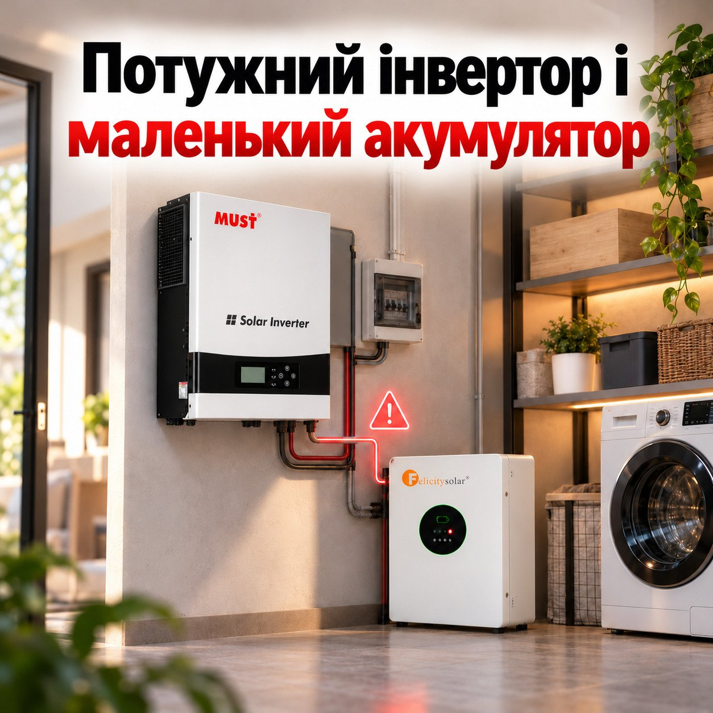

Потужний інвертор і маленький акумулятор: чому система не тягне очікуване навантаження?
Чому інвертор на 6 кВт може вимикатися під навантаженням, хоча його потужності мало б вистачати: як струм розряду акумулятора обмежує систему, чому більша ємність не завжди допомагає, що ще може бути причиною і як правильно поєднати інвертор та батарею.
Інвертор на 6 кВт здається цілком достатнім для більшості домашніх потреб. Холодильник, пральна машина, мікрохвильовка та інша побутова техніка мають працювати без проблем. Однак на практиці все може виявитися інакше. Поки навантаження невелике, система працює стабільно, але після ввімкнення потужнішого приладу інвертор раптом подає сигнал помилки або вимикається.
Причина не обов'язково в самому інверторі. Навіть якщо він розрахований на високу потужність, підключений акумулятор може не впоратися з таким навантаженням. Адже важливо не лише те, скільки електроенергії зберігає батарея, а й те, з якою потужністю вона здатна її віддавати.
Чому 6 кВт на інверторі не завжди означають 6 кВт для вашої техніки
Потужність інвертора показує, яке навантаження він може витримати, але багато залежить і від акумулятора. Саме від нього інвертор отримує енергію під час відключення світла, якщо немає живлення від інших джерел.
Наприклад, гібридний інвертор MUST PV19-6048EXP на 6 кВт із підключеним акумулятором на 51,2 В і допустимим тривалим струмом розряду 50 А зможе отримувати від батареї лише близько 2,56 кВт потужності, частина якої втрачатиметься під час перетворення.
Тож навіть потужний інвертор не зможе працювати на повну, якщо акумулятор не здатен забезпечити його необхідною енергією.
Що відбувається, коли акумулятор не справляється
За невеликого навантаження система може працювати бездоганно. Холодильник, телевізор та освітлення працюють як завжди, але варто увімкнути електрочайник чи інший потужний прилад, як інвертор видає помилку або вимикається.
Найчастіше це пов’язано з перевищенням допустимого струму розряду акумулятора. У LiFePO4-батареях за цим стежить система захисту BMS, яка може відключити живлення у разі перевантаження. Інша можлива причина полягає в просіданні напруги під навантаженням, особливо коли заряд акумулятора вже низький.
Чому навіть короткий запуск техніки може вимкнути систему
Деякі побутові прилади під час запуску потребують значно більше потужності, ніж у звичайному режимі. Наприклад, у холодильника чи водяного насоса пусковий струм може в кілька разів перевищувати робочий.
Навіть якщо інвертор здатен витримати таке короткочасне навантаження, акумулятор теж повинен забезпечити необхідний струм. Інакше система може вимкнутися, особливо коли одночасно запускаються кілька приладів.
Великий акумулятор теж не завжди вирішує проблему
Здавалося б, достатньо придбати батарею більшої ємності, і всі труднощі зникнуть. Насправді не все так просто.
Більша ємність акумулятора не завжди означає, що він зможе забезпечити потужніше навантаження. Вона насамперед впливає на запас енергії та тривалість роботи техніки. А от скільки потужності батарея може віддавати одночасно, залежить від допустимого струму розряду.
Наприклад, акумулятор Felicity FLB48230WG1-H на 51,2 В і 230 А·год має рекомендований струм розряду 100 А, максимальний тривалий 150 А, а протягом 15 секунд може витримувати до 200 А. Тобто батарея здатна короткочасно забезпечити більше навантаження, ніж під час постійної роботи.
Саме тому два акумулятори з однаковою ємністю можуть по-різному поводитися з потужною технікою. І ці відмінності варто враховувати ще до покупки.
А якщо проблема не в акумуляторі
Іноді навіть правильно підібраний акумулятор не рятує від раптових відключень. Причиною можуть бути занадто тонкі або довгі кабелі, слабкі контакти чи неправильні налаштування інвертора.
При невеликому навантаженні ці недоліки можуть залишатися непомітними, але зі збільшенням споживання виникають просідання напруги та помилки в роботі системи.
Тому перш ніж купувати потужніший акумулятор, варто перевірити підключення та налаштування обладнання. Можливо, проблему вдасться вирішити без додаткових витрат.
Як зрозуміти, чого не вистачає вашій системі
Щоб зрозуміти причину несправності, зверніть увагу на те, як поводиться система під час роботи.
- Інвертор вимикається після запуску потужного приладу – можливо, акумулятор не витримує навантаження або спрацьовує захист.
- При невеликому навантаженні все працює, а при більшому з'являється помилка – варто перевірити напругу батареї, підключення та налаштування інвертора.
- Акумулятор швидко розряджається – його запасу енергії може бути недостатньо для підключеної техніки.
- Система вимикається при низькому заряді – причиною може бути просідання напруги або спрацювання BMS.
Звертайте увагу на коди помилок інвертора та умови, за яких вони виникають. Це допоможе швидше знайти причину, а перевірку кабелів і силових з'єднань краще довірити спеціалісту.
Як зібрати надійну систему для стабільної роботи
Для стабільної роботи системи важливо правильно поєднати можливості інвертора та акумулятора. Почніть із простого: визначте, які прилади працюватимуть одночасно, підрахуйте їхню загальну потужність і врахуйте додаткове навантаження під час запуску холодильника, насоса чи іншої техніки з двигуном.
Щоб не підбирати обладнання окремо, можна розглянути готовий комплект MUST PV19-6048EXP 6 кВт з акумулятором Felicity FLA48230 230 А·год. Проте навіть у готовому комплекті важливо перевірити допустиме навантаження та правильно налаштувати обладнання.
Пам’ятайте, що потужний інвертор не розкриє всіх своїх можливостей, якщо акумулятор не здатен забезпечити необхідний струм. Саме правильний підбір компонентів допоможе отримати надійне резервне живлення для щоденних потреб.